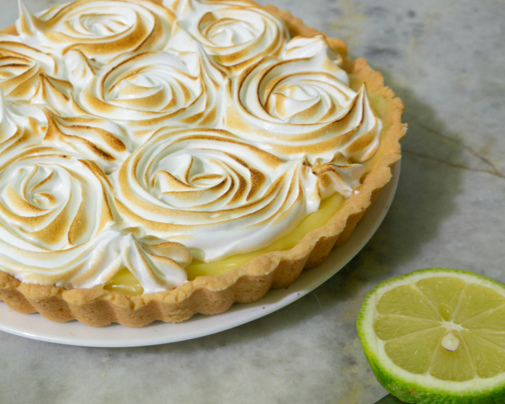

Ingredientes:
- 2 xícaras de farinha de trigo
- 1 xícara de açúcar
- 1/2 xícara de manteiga
- 1/2 xícara de leite
- 2 ovos
- 1 colher de chá de essência de limão
Modo de Preparo:
- Pré-aqueça o forno a 180°C.
- Em uma tigela grande, misture a farinha, o açúcar e a manteiga. Amasse até obter uma massa homogênea.
- Adicione o leite, os ovos e a essência de limão. Misture bem.
- Despeje a massa em uma forma untada e enfarinhada.
- Asse por cerca de 30-35 minutos ou até que um palito inserido no centro saia limpo.
- Deixe esfriar antes de desenformar e servir.